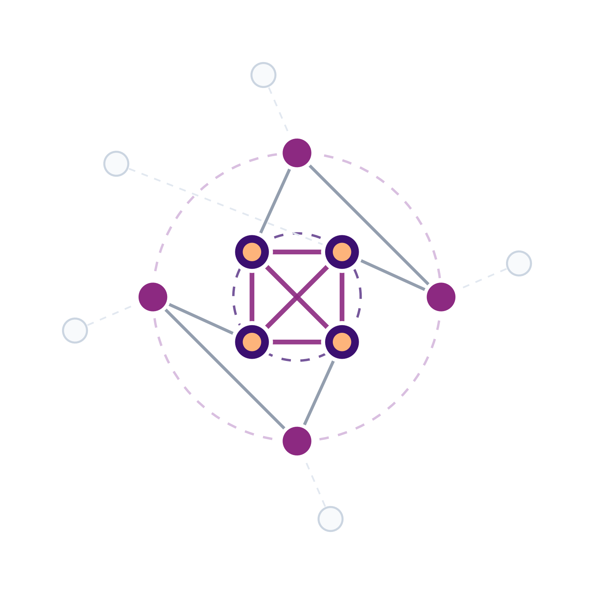

Sharing without losing: the journey of pollen through a species-rich meadow
Jakub Štenc1,2,3 & the Handrkov team
1Charles University (Botany) | 2Charles University (Zoology) | 3CREAF, Spain
Sharing without losing: the journey of pollen through a species-rich meadow
Jakub Štenc1,2,3 & the Handrkov team
1Charles University (Botany) | 2Charles University (Zoology) | 3CREAF, Spain


What is pollination?
≈ 1 min

in the anthers

to another flower

of the same species
→ fertilisation → seeds
Sharing is the norm
≈ 1.5 min


The journey of a pollen grain
≈ 1 min


anther → pollinator
pollinator → stigma
sharing network
The locality
≈ 1 min


15 years of data collection (2011–2025)
Study design: Janovský et al. (2013)
Permanent plots
≈ 1 min


Plant and pollinator survey
≈ 1.5 min


42 378 plot surveys · 68 460 interactions · 176 pollinator taxa × 55 plant species
15 years of networks
≈ 1 min

Three species, three strategies
≈ 1 min

Mainly pollen-feeding hoverflies


Mainly bees


Bees only
Photos: Lukáš Janošík · Štenc et al. (2023)
How we measured pollen release
≈ 0.5 min
- Every hour, 8:00–17:00, two days
- Flowers offering pollen from 5 inflorescences per species → vial with stained detergent solution
- Pollen grains in each vial counted
- Flowers offering pollen counted on 20 inflorescences
→ pollen available per inflorescence, hour by hour
Photo: Lukáš Janošík · Štenc et al. (2023)
When is pollen available?
≈ 1.5 min

Štenc et al. (2023)
Succisa releases its pollen in the morning.
Centaurea and Trifolium peak in the early afternoon.
Pollinators track pollen
≈ 1 min

This image is a schematic (no axis values). Replace it with the real visitation-vs-pollen figure of START I (e.g. Tablo2.pdf or kombograf_ultra_mega6.pdf in Psani_clanku/2021/START_paper), or keep it as a concept and say so.
What do pollinators carry?
≈ 1.5 min

Štenc et al. (2025)
- Succisa: most pollen in the morning, then quantity and purity drop
- Centaurea, Trifolium: more even loads through the day
- Explained by plant density (Centaurea) and flower morphology with release strategy (Trifolium)
Pollen must flow
≈ 1 min

Štenc et al. (2025)
Who carries the pollen?
≈ 1 min


618 pollinators, 2020–2021, Handrkov · Freudenfeld et al. (2025)
Who visits changes every year
≈ 1 min


45 472 visits, 2011–2021 · Freudenfeld et al. (2025)
Abundance, not identity
≈ 0.5 min

Data: Freudenfeld et al. (2025)
Pollinators differ little in how much pollen they carry.
Their contribution is set by how abundant they are that year.
From body to stigma
≈ 1 min

Defining the deposition steps
≈ 1 min

Pollen carried by visitor.
Can be own species (CP) or foreign (HP).
Pollen left by one visit on virgin stigma.
Mechanically inefficient & noisy (high CV).

Final cumulative load on old stigma.
Accumulated visits buffer noise (low CV).
How we measure deposition
≈ 1 min
- Bag the inflorescence in tulle before anthers open
- Unbag when stigmas are receptive
- Wait for one visit, note the visitor
- Collect the visited stigma into ethanol
- Flowers with withered corolla = end of stigma life
- 3 stigmas per head, 30 plants per day
- Clear, stain with safranin, squash
- Count own and foreign grains at 400×


One visit is a lottery
≈ 1.5 min

One visit leaves only ≈ 2 % of the body’s own pollen on the stigma · no difference among Eristalis, Helophilus and Bombus
But the final load is stable
≈ 1.5 min


The law of large numbers
≈ 1.5 min


From one meadow to a landscape
≈ 1 min

Slavkovský les Protected Landscape Area, W Bohemia · land cover ESA WorldCover 2021 · relief AWS Terrain Tiles · boundary © OpenStreetMap
Same question, 60 meadows
≈ 1 min
photo Natálie Hanusová
MSc thesis 2024 · field work, pollen counts
3 stigmas per plant, ≈ 20 plants per meadow
20-min transects, morning and afternoon
meadow, forest, marsh, water

Meadow means: HP varies 8-fold, CP only 2-fold
Buffered in time and in space
≈ 2 min

Own pollen: little variance between years (3 %) or meadows (11 %). Foreign pollen: about a third (34 % and 30 %).
Foreign pollen follows the neighbours
≈ 1.5 min

- More Succisa flowerheads → less HP (dilution, as at Handrkov)
- Wetter surroundings (marsh, close to water) → more HP
- Landscape explains 35 % of HP between meadows, only 12 % of CP
- Visitor composition explains neither
Taller plants get more pollen
≈ 1 min

But traits leave plant-to-plant variance unchanged (ICC 0.793 → 0.794)
Optional: photo of a tall Succisa above the grass.
Is taller better?
≈ 1 min
photo Klára Hodánková
role / affiliation
photo Javier Valverde
role / affiliation

Taller flowers stick out of the grass and receive more own pollen (Slavkovský les).
But does more pollen also mean better pollen?
Fill in species, site and sampling date (the data files do not say; I assumed Succisa pratensis), roles and affiliations. Add the two photos when you have them.
From pollen grain to pollen tube
≈ 1 min


- Pollen lands on the stigma
- A compatible grain germinates: a tube grows down the style to the ovule
- Only grains with a tube can fertilise
What we measured
Height of every flowering stalk (194 stalks, 100 plants)
Pollen grains and pollen tubes on 61 stigmas from 32 plants
Add how stigmas were stained for tubes (e.g. aniline blue under fluorescence) and when they were collected.
Height, pollen and pollen tubes
≈ 2 min


Most plants are 25–40 cm tall · only 3 % of stalks exceed 50 cm
Pollen per stigma rises with height and levels off at ≈ 50 cm · grey bars = plant heights in the meadow
Pollen tubes follow a flatter curve, peaking at ≈ 45 cm
The share of grains with a tube falls: ≈ 45 % at 15 cm → ≈ 24 % at 65 cm
2026 · with Klára Hodánková and Javier Valverde · unpublished
Pollen deposition through a flower’s life
≈ 2 min


Redraw the GAMM figure: the confidence bands are broken and “Unknown” / “SC” add noise. Show SI vs SIC only. Literature synthesis: 36 species, 23 families, 49 surveys, 194 time-stamped records.
Plants linked by shared pollinators
≈ 1 min

What is the core?
≈ 1 min




A stable core
≈ 1.5 min

Recurring summer drought
≈ 0.5 min

Data: TerraClimate (Abatzoglou et al. 2018), Handrkov locality (2011–2025)
Drought concentrates visits on the core
≈ 1.5 min


How robust is the network?
≈ 1 min


Co-extinction simulation following Memmott, Waser, and Price (2004)
A more fragile network
≈ 1.5 min

Co-extinction simulation following Memmott, Waser, and Price (2004)
Losing the core costs more in dry years and more every year
Visits are not pollen
≈ 1.5 min


The price of being in the core
≈ 1.5 min

Hypothesis: when drought crowds pollinators onto the core, core plants share almost every insect and receive more foreign pollen.
First hint on Succisa stigmas: own pollen stable, foreign pollen highest in dry 2023, lowest in 2024 when Succisa flowered densely.
Three years cannot separate drought from Succisa density. Say so, and present this as the motivation for continued stigma sampling (SucTemDep) and the apparent-competition project.
The whole meadow splits the day
≈ 1.5 min
Part 2: three species release pollen at different times


When pollinators visit each plant species, 15 years of plot surveys
Global generalists, local specialists
≈ 1 min

Timing decides what pollinators carry
≈ 1.5 min


Own pollen on Succisa visitors: ≈ 350 grains at 8:30 → ≈ 50 at 14:30
Foreign pollen stays the same all day
A morning visitor carries ≈ 50 % own pollen, an afternoon visitor ≈ 7 %
293 swabbed visitors of Succisa, Handrkov 2024 · confirms Štenc et al. (2025) with new data
The next dry summers
≈ 0.5 min

Optional: HanFutNet (ERGM): binary structure stays stable under drought, interaction strengths rewire. HanNullNet: is stability built by spatial or temporal turnover? Pick at most one, or keep both as “questions we are working on” in one line each.
The Handrkov team
≈ 0.5 min

Acknowledgements: co-authors (Janovský, Hadrava, Mikát, Matoušková, Freudenfeld, Švanda, Ryšan, Pijálková, Horčičková, Straka, Bosch), students (N. Hanusová), field volunteers, funding (GAČR, GAUK, CREAF postdoc). Check funding numbers.
Join us

Thank you for your attention!


Backup: community stability 2022–2024

Backup: Succisa abundance in space and time

Backup: Slavkovský les landscape drivers (RDA)

Backup: visitor identity does not predict pollen loads

Backup: deposition curves by life form


Backup: pollen on stigma and pollinator

Backup: from above

Backup: pollen production per inflorescence

Backup: sampling effort per year

Backup: Eristalis constancy by flower pair

Backup: space as a niche axis
Project HanSpaNet. Fine-scale spatial clumping of plants: aggregated species “steal” visits from dominant foragers, dispersed neighbours lose. This scales the Slavkovský les and plant height results to the community. Decide whether to show the graphical abstract below or one result plot.